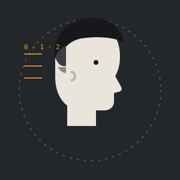
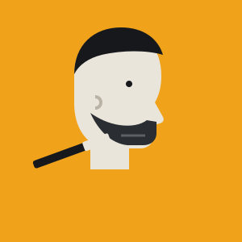
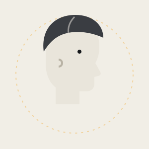

Corte de pelo de caballero
Tijera, máquina o mezcla de las dos. Se habla antes de empezar: cómo lo llevas, cómo lo peinas y cuánto quieres que te dure.
Pedir este servicio →Peluquería de caballeros · Gines
Corte de pelo y arreglo de barba en la calle Romero Ressendi. Sin prisas, con buena mano y con el mismo cuidado el primer día que el décimo.
01 · Servicios
Pocos servicios, bien hechos. Pregunta el precio o el hueco que te viene mejor y te contestamos por WhatsApp.
Tijera, máquina o mezcla de las dos. Se habla antes de empezar: cómo lo llevas, cómo lo peinas y cuánto quieres que te dure.
Pedir este servicio →Recorte, forma y perfilado de líneas para que la barba quede limpia y a tu medida.
Pedir este servicio →El servicio completo en una sola visita: sales con el pelo y la barba en el mismo punto.
Pedir este servicio →Del degradado bajo y discreto al más marcado, con transición limpia y nuca bien acabada.
Pedir este servicio →Para los más pequeños de la casa, con paciencia y sin sustos.
Pedir este servicio →Precios en el salón o por WhatsApp.
02 · Peluquería de caballeros
Cómo lo llevas ahora, qué te molesta y qué quieres. Dos minutos que ahorran sorpresas.
Máquina y tijera a tu gusto. Sin correr, aunque haya gente esperando.
Patillas, nuca y contorno bien definidos. Si hay barba, la dejamos a juego.
Peinado y un consejo para que el corte te dure hasta la próxima visita.
«Un buen corte no es el que se nota el primer día. Es el que sigue bien a las tres semanas.»
03 · Galería
Este espacio está pensado para los trabajos reales del salón: un antes y después, un degradado recién hecho, una barba perfilada.



04 · El salón
Peluquería Rafael Lobo está en la calle Romero Ressendi, en Gines. Es de esos sitios a los que se vuelve porque te conocen: sabes quién te va a cortar y él sabe cómo te gusta.
Aquí no hay cadenas ni turnos con número de serie. Hay un sillón, buenas herramientas y la costumbre de hacer las cosas bien, desde el primer corte del niño hasta el arreglo de barba de los sábados.
05 · Opiniones
«Me corto con Rafael desde hace tiempo y siempre salgo como quiero. Buen trato y sin esperas raras.»
«El degradado perfecto y la barba igual. Le mandé un WhatsApp por la mañana y me dio hueco esa tarde.»
«Llevo a mi hijo y tiene una paciencia enorme con él. Peluquería de las de siempre, de confianza.»
06 · Pide tu turno
Marca qué quieres y cuándo te viene mejor. Se abre WhatsApp con el mensaje ya escrito, solo tienes que enviarlo.
07 · Dónde estamos
41960 Gines, Sevilla
En Gines, fácil para quien viene andando y para quien llega desde Bormujos, Espartinas o Valencina.
Cómo llegar